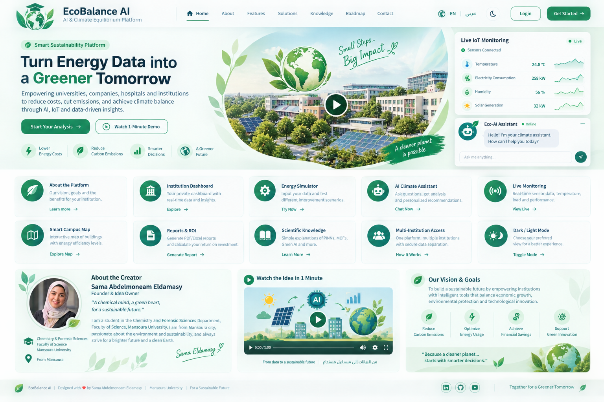

Institution Dashboard
A dedicated workspace for each organization, building, and team.
Explore →Empowering universities, companies, hospitals and institutions to reduce costs, cut emissions, and achieve climate balance through AI, IoT and data-driven insights.

*Illustrative design figures only. Actual results are calculated from each institution’s verified data.
One workspace for energy intelligence, environmental impact, and practical action.
A dedicated workspace for each organization, building, and team.
Explore →Test energy-saving scenarios and instantly estimate financial impact.
Try it now →Visualize sensor readings and energy demand as data arrives.
View live →Ask questions and receive tailored guidance based on your figures.
Ask the assistant →Prepare management-ready summaries and estimate payback periods.
Create a report →Compare buildings and identify where improvements matter most.
Explore map →Understand PINNs, MOFs, forecasting, and Green AI in plain language.
Learn more →Designed for separate organization accounts and controlled access.
How it works →EcoBalance AI is designed to help institutions understand their energy use, assess carbon impact, test improvement scenarios, and turn sustainability goals into measurable plans. It combines data analytics, scientific methods, and AI-assisted guidance in one accessible workspace.
Our vision is a future where every institution can make clear, affordable, evidence-based decisions that reduce waste, improve energy performance, and support a lower-carbon economy.
Create a reliable picture of current performance.
Prioritize actions with meaningful savings.
Track outcomes against a clear baseline.
Support organizations of different sizes.
Enter your own figures to explore possible savings. This starter calculator runs locally in your browser.
Estimates depend on the accuracy of your inputs. This prototype uses a simplified calculation and is not a verified energy audit. Renewable share is shown as context and does not automatically change the savings calculation.
A simulated sensor stream demonstrates how real IoT readings could appear. No physical sensors are connected in this prototype.
To use real ESP32/Raspberry Pi devices, a secure backend and MQTT broker must be configured.
Ask a question about the demo calculations or sustainability concepts.
A conceptual campus map for the prototype. Real locations and efficiency scores can be added once verified building data is available.
A chemical mind, a green heart, for a sustainable future.
Chemistry & Forensic Sciences student · Faculty of Science · Mansoura University
I am a student in the Chemistry and Forensic Sciences Department at the Faculty of Science, Mansoura University. From Mansoura, I am deeply passionate about the environment and sustainable development, and I always strive for a brighter future and a cleaner planet.
Sama Abdelmoneam Eldamasy
A short, silent explainer with on-screen captions in English and Arabic.
From energy data → to smarter decisions → to a cleaner planet.
Short explanations help users understand the technology behind sustainability decisions.
Physics-Informed Neural Networks combine measurements with physical laws to model systems where data may be limited.
Metal-Organic Frameworks are porous materials being studied for gas capture, separation, and storage applications.
Time-series models learn from historical measurements to estimate future demand, with uncertainty reported.
Efficient models and carbon-aware scheduling can reduce computational costs when measured and applied appropriately.
A practical development path that prioritizes trustworthy calculations, privacy, and real-world value.
Bilingual UI, validated calculator, data export, and accessibility.
Secure institution accounts, buildings, permissions, and data history.
Real MQTT telemetry, forecasting, and AI grounded in institution data.
Pilot results, audit trail, deployment hardening, and expansion.
Start with one building, measure its baseline, and build a credible path to savings.